Вертолет Ми-8.
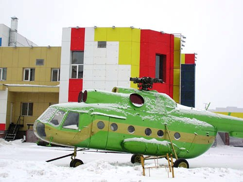
Торговый центр «Вертолет» в Новом Уренгое отличается от своих конкурентов одной особенностью - на его крыше установлен шедевр отечественной конструкторской мысли - вертолет Ми-8 или, как его еще называют «великолепная восьмерка», «вертолет ста профессий».

Эта знаменитая машина была создана еще в 1960-х годах в конструкторском бюро М. Л. Миля. В последующие годы она постоянно улучшалась и вот уже более 60 лет работает по всему миру. «Восьмерка» — самый массовый двухдвигательный вертолет на Земле!
На сегодняшний день их построено более 13 000. Феноменальное долголетие этой машины объясняется гениальностью его создателей, главным из которых был Михаил Леонтьевич Миль.
Отец советского вертолетостроения.
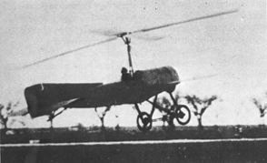
Михаил Миль сразу же загорелся идеей построить такую машину и начал изучать теорию ее полёта. После института он участвовал в разработке первых советских автожиров, а в 1941-42 годах даже воевал в составе отряда из 5 советских автожиров против фашистов.
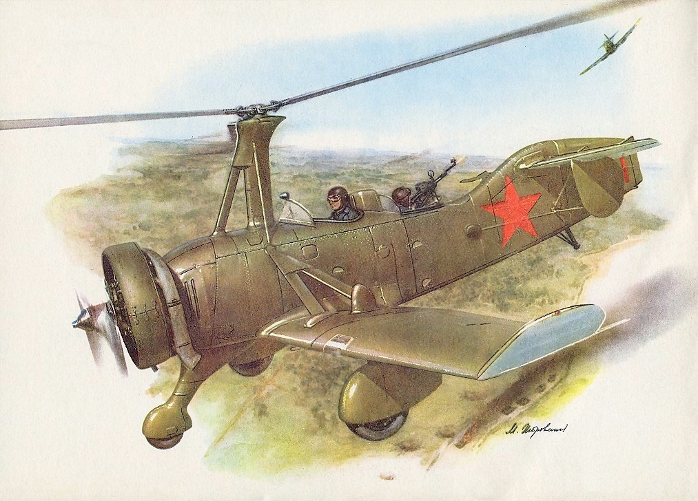
В 1943 году Миль защитил кандидатскую диссертацию «Критерии управляемости и маневренности самолёта»; в 1945 году — докторскую «Динамика ротора с шарнирным креплением лопастей и её приложение к задачам устойчивости и управляемости автожира и геликоптера».
Миль задался целью создать более надежный, чем автожир, летательный аппарат, способный подниматься в воздух с помощью винтов.
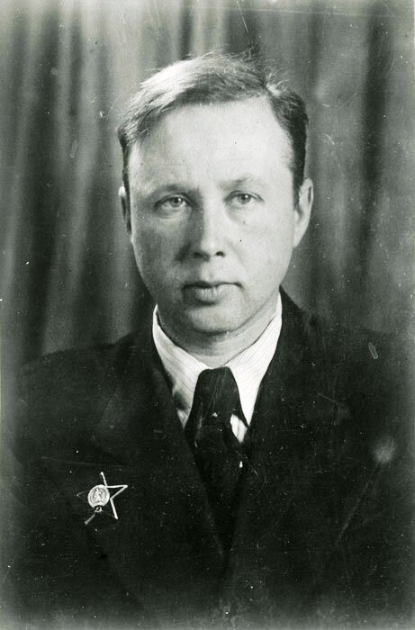
Он настойчиво писал письма И. В. Сталину, убеждая того в необходимости начать работы по созданию винтовых летательных аппаратов. В результате глава СССР дал добро на организацию в Москве специального конструкторского бюро во главе с Михаилом Милем. В 1948 году в воздух поднялся первый опытный вертолет ЭГ-1 (экспериментальный геликоптер), позже переименованный в Ми-1.
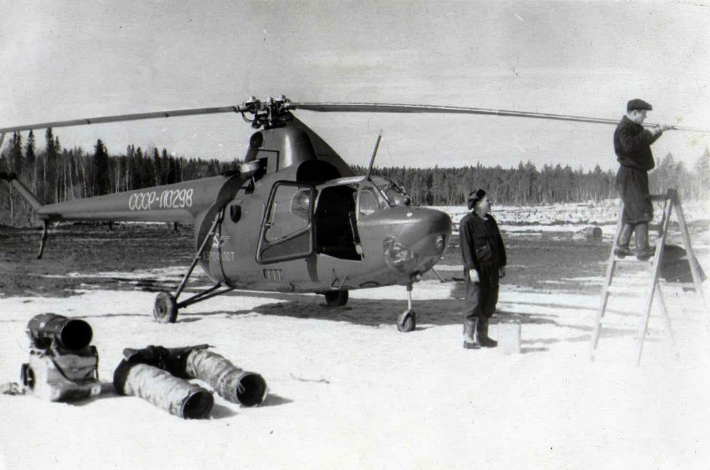
С этого важного дня началась легендарная история коллектива конструкторского бюро М. Л. Миля, силами которого были созданы вертолеты Ми-2, Ми-4, Ми-6, Ми-8, Ми-10, Ми-12, Ми-24 и др. Вместе со своими коллегами Михаил Леонтьевич разработал теорию современного вертолёта.
Мы уже говорили о том, что Михаил Миль прекрасно рисовал. Про его вертолеты говорили, что они рождены скорее в студии художника, нежели за чертежной доской. Перед тем, как начать работу над новым вертолетом, он делал его набросок, раскрашивал и говорил: «Вот такая у меня будет машина!». Также было и с Ми-8.
Рождение великолепной восьмерки
Ми-8 создавали в ОКБ Миля в конце 1950-х – начале 1960-х годов. В это время, благодаря разрядке международных отношений, военные расходы СССР снижались, что позволяло перераспределить ресурсы в пользу гражданских благ. В то же время мировое вертолетостроение переживало подъем. У коллектива Миля уже были успешные разработки. В их числе первый военный транспортник Ми-4.
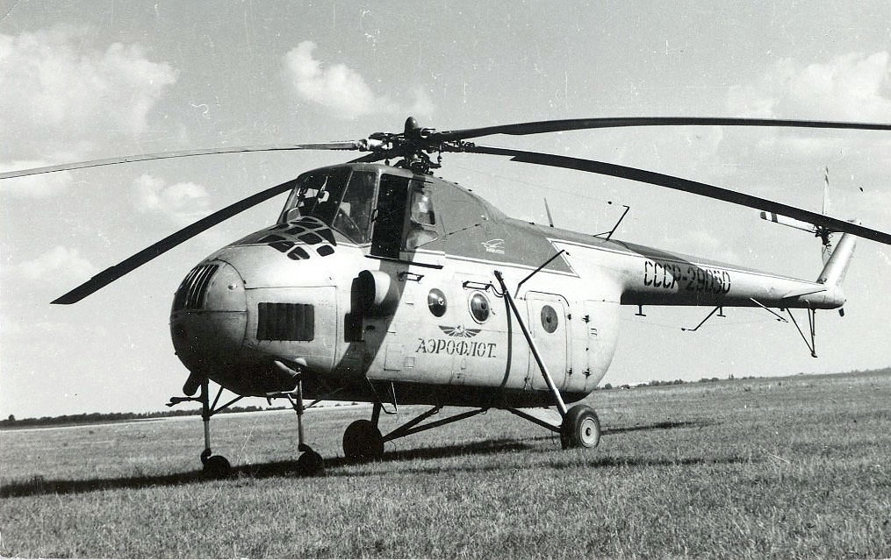
Это многоцелевая машина, полюбилась военным. Ее продавали в другие страны. Она была хороша всем, кроме устаревающего поршневого двигателя. В 1957 году милевцы создали вертолет-гигант Ми-6 весом, способный перевозить грузы весом более 10 тонн. Такая возможность появилась по той причине, что вертолет был оборудован двумя турбовальными двигателями. Этот технический ход Михаил Леонтьевич Миль хотел применить и на новом универсальном вертолете.
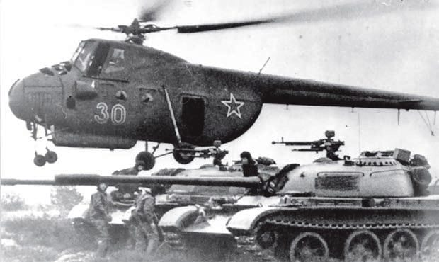
Так как военных существующие Ми-4 вполне устраивали, то чтобы получить зеленый свет и финансирование, конструктор пошел на хитрость. Разработка будущего Ми-8 была подана как модификация Ми-4 под газотурбинный двигатель. Уловка сработала, и 20 февраля 1958 года ОКБ получил госзаказ на вертолет с рабочим названием В-8. Заказчиком стало Министерство гражданской авиации в лице «Аэрофлота».
Первый полет.
Сначала будущая «великолепная восьмерка» была очень похожа на Ми-4. Сердце вертолета - двигатель - оставался прежним. По этой причине все, что было связано с ним, включая винты, оставались знакомыми. Первые главные изменения коснулись фюзеляжа – кабина была перенесена в носовую часть и существенно обновлена, двигатель поместили над фюзеляжем, все остальное пространство занимал грузовой или пассажирский отсек. Разработкой В-8 руководил заместитель главного конструктора В. А. Кузнецов. В 1959 году были созданы первые опытные машины.
Первый В-8 был выполнен в пассажирской конфигурации с 18-местным салоном повышенной комфортности.
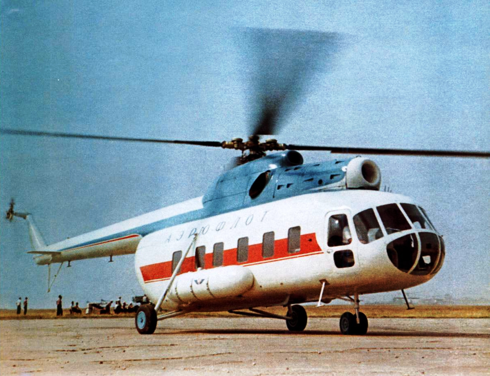
24 июня 1961 года заводской экипаж впервые поднял новую машину в небо. Она понравилась руководству страны. Уже через две недели ее показали на воздушном параде в Тушино, а затем экспонировали на Выставке достижений народного хозяйства в Москве. B-8 стал прекрасным образцом для демонстрации новейших технологий в советском вертолетостроении.
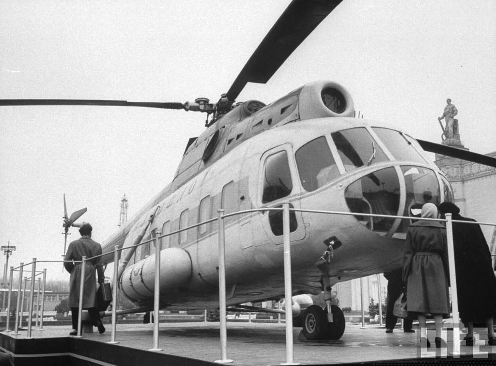
Один двигатель − это тупик.
Однако Михаил Миль не почивал на лаврах, а шаг за шагом двигался дальше к своей цели − в сторону от модификации Ми-4 к новому двухдвигательному вертолету. В этом ему помогает случай. В сентябре 1959 года руководитель СССР Никита Сергеевич Хрущев побывал с официальным визитом в США, где был впечатлен правительственным вертолетом S-58 Сикорски с просторным салоном, удобными креслами и барной стойкой.
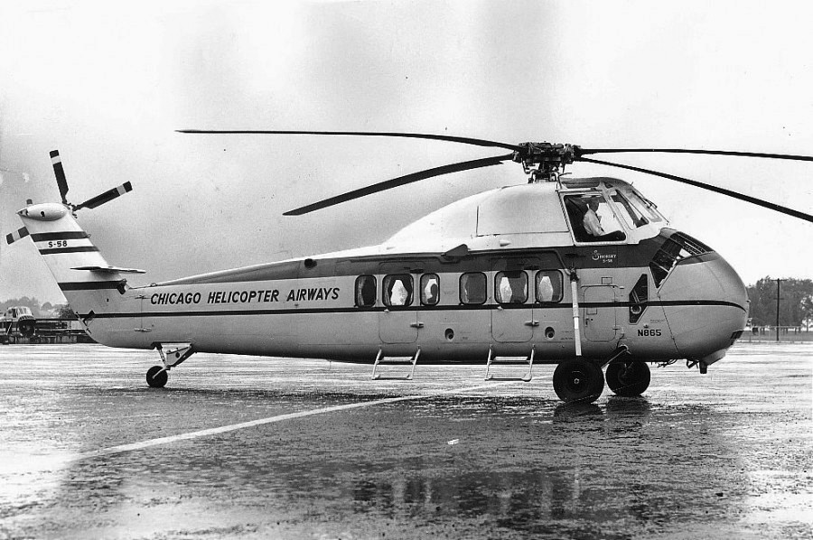
По возвращению он осмотрел советский В-8 и остался доволен. Миль же сообщил Хрущеву, что если тот разрешит развивать проект В-8 с двумя двигателями, то создаст к ответному визиту президента США более мощную и надежную машину в качестве вертолета-салона. Уже 30 мая 1960 г. вышло постановление о вертолете В-8А с двумя газотурбинными двигателями. Милевцы продолжали улучшать машину: у винта появилась пятая лопасть, откидные боковые двери заменили сдвижными, вместо четырехточечного шасси установили трехточечное. Через два года молодое конструкторское бюро под руководством С. П. Изотова представило для КБ Миля первый в СССР специальный вертолетный двигатель ТВ-2-117 с новым редуктором. До этого на винтокрылых машинах применялись модифицированные самолетные образцы. Использование двух двигателей большой мощности позволило увеличить пассажировместимость и грузоподъемность вертолета. Первый полет В-8А, с двумя газотурбинными двигателями состоялся 2 августа 1962 г.

Новое имя и большая серия.
Гениальное конструкторское решение и целеустремленность Михаила Леонтьевича Миля привели к тому, что всего за три года конструкторам удалось вместо заявленной в начале модернизации Ми-4 сделать новый летательный аппарат. Выпуск машин наладили на Казанском вертолетном заводе. В конце 1965 года с конвейера сошли первые серийные машины, которые уже назывались Ми-8.
В июне 1965 года Ми-8 был представлен на авиасалоне Ле-Бурже в Париже и получил высокие оценки зарубежных экспертов. Продвижению вертолета за границей уделяли большое внимание. Во время одного из таких «рекламных» перелетов летчик-испытатель Герман Алферов в сумме налетал на Ми-8 35 тыс. км, то есть практически облетел вокруг земного шара.
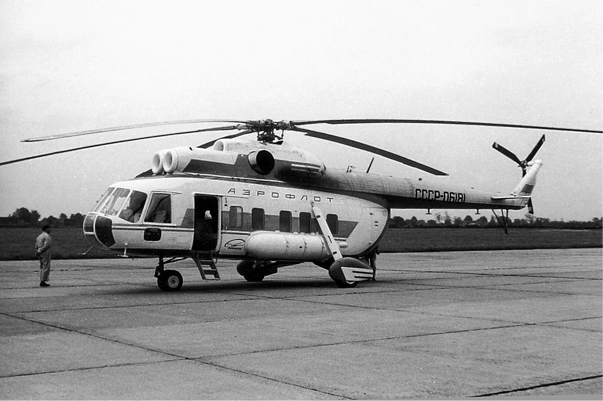
Спрос на Ми-8 в нашей стране и за рубежом был такой большой, что пришлось запускать его производство еще на одном заводе - в Улан-Удэ.
Участие советской техники во Вьетнамской войне показало, что эпоха поршневых вертолетов ушла в прошлое. В 1968 году на вооружение армии СССР вместо Ми-4 приняли боевую модификацию Ми-8. Только после этого важного шага разработчиков вертолета наградили государственными премиями.
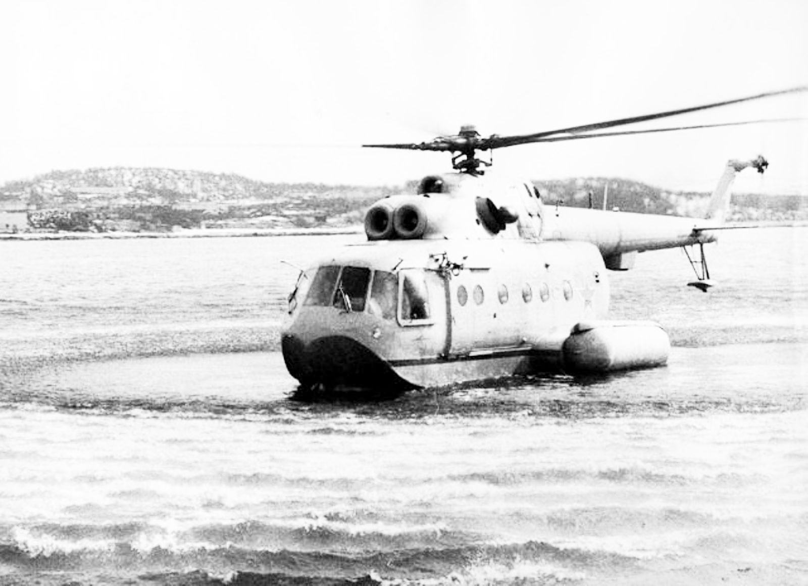
Триумф «русского вертолета».
С 1968 года началась большая и долгая жизнь Ми-8. Под запросы военных вертолет стал получать узкие модификации: санитарный, минер, мастерская, заправщик, разведчик, вертолеты-амфибия и многие другие. В мирных делах машину прекрасно использовали для работы в отдаленных регионах.

К середине 1970-х годов базовый Ми-8 стал устаревать, но его эффективность показала, что в создании новой модели вертолета с ноля нет необходимости. Можно было просто модернизировать имеющийся. К 1980 году Ми-8 получил новые двигатели ТВ3-117 и ВСУ. Новая модель вертолета получила наименование Ми-8МТ.
Вертолеты над будущим городом Новый Уренгой».
Первые вертолеты начали летать над тем местом, где сейчас находится город Новый Уренгой, в конце 1950-х годов. Они сопровождали изыскательские партии геофизиков, занимавшиеся поиском нефти и газа. Наверняка это были машины типа Ми-1. Других серийных вертолетов в стране еще не было.
В 1965 году небо Уренгоя стало привыкать к шуму вертолетных лопастей. Большие военные Ми-6 доставляли из поселка Уренгой на реке Пур к месту бурения скважины Р-2 участников Нарыкарской нефтеразведочной экспедиции.
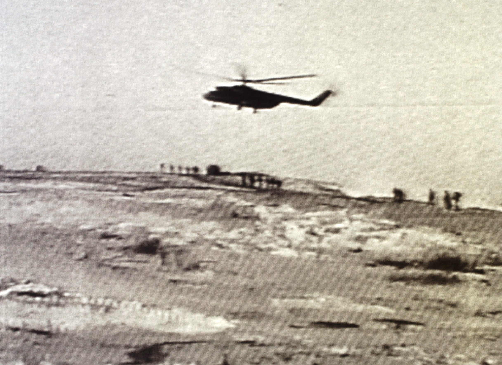
В это время впервые в отечественной геологии был применен вахтовый метод работ. Вахту буровиков, которая работала по 15 дней, возили самолетами Ан-12 из поселков Нарыкары и Шухтунгорта (Ханты-Мансийский автономный округ) до Уренгоя, а потом вертолетом доставляли на буровую. 6 июня 1966 года фонтан газа из скважины Р-2 открыл миру гигантское Уренгойское нефтегазоконденсатное месторождение. Его нужно было изучать. По этой причине в летнюю навигацию 1966 года в Уренгой по воде прибыла основная часть работников Нарыкарской экспедиции и члены их семей. Но кого-то перевозили на вертолетах Ми-4 и самолетах Ан-2.
А что же наш Ми-8? Он тоже прославился.
23 сентября 1973 года на место будущего строительства поселка Ягельное (предшественник поселка и города Новый Уренгой) на несколько часов приземлился вертолет Ми-8, командиром экипажа которого был Леонид Тимофеевич Холупенко. Он привез сюда правительственную комиссию под руководством министра газовой промышленности Сабита Атаевича Оруджева. Комиссия в торжественной обстановке одобрила выбор площадки под будущий поселок. На редчайшей фотографии из фондов Музея истории компании «Газпром добыча Уренгой» изображены члены этой правительственной делегации и работавшие здесь геологи. Справа - члены экипажа вертолета.
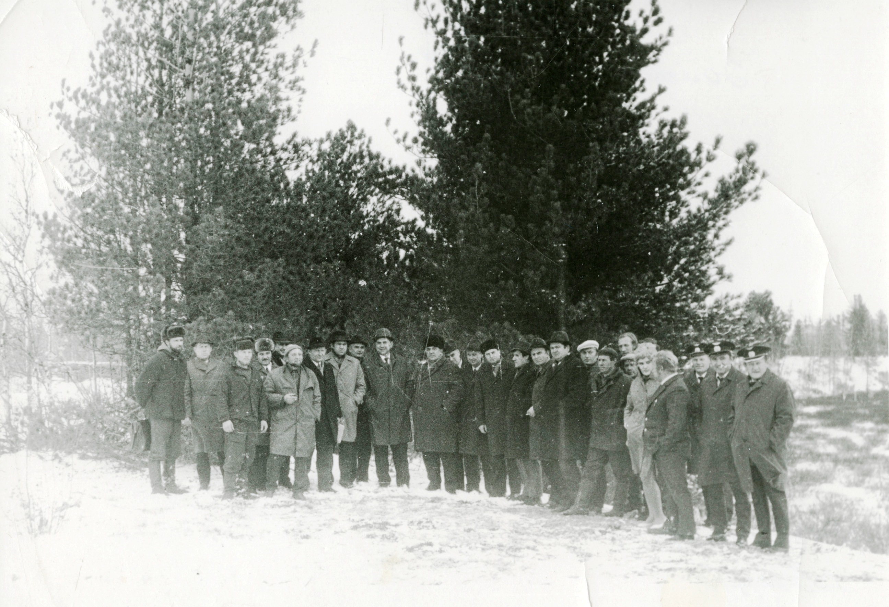
В середине декабря 1973 года из поселка Пангоды на восток двинулся санно-тракторный десант, чтобы через 120 километров остановиться в точке, которую одобрила правительственная комиссия, и начать обустройство площадки поселка Ягельное. Представители руководства ПО «Надымгазпром» с некоторой периодичностью пролетали на вертолете над районом движения колонны, следили, чтобы десант не заблудился. После прибытия на место 23 декабря 1973 года бульдозеристы первым делом отчистили от снега большую площадку для размещения жилых вагончиков и посадки вертолетов. На следующий день сюда на винтокрылых машинах прибыли руководители Пуровского района, ПО «Надымгазпром» и геодезисты. Сохранилась фотография, на которой запечатлен наш главный герой - вертолет Ми-8.
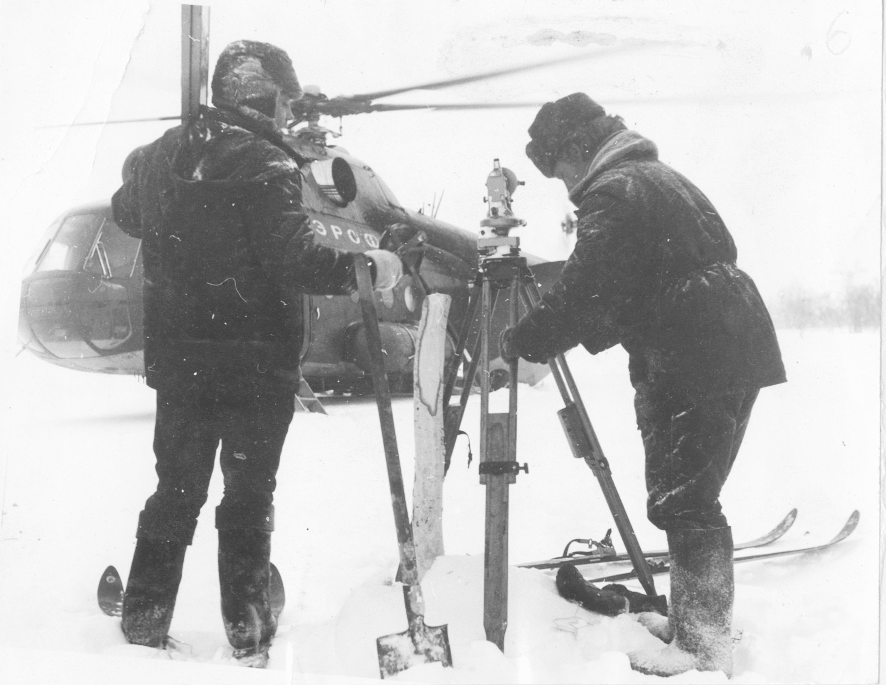
Эта площадка, изначально расчищенная тракторами для посадки вертолетов, и оставалась их воротами в небо в поселке Ягельное до 1975 года.
В 1975 году в нескольких километрах западнее от первой площадки появился маленький но настоящий аэропорт «Ягельное» Ямало-Ненецкого производственного объединения гражданской авиации (г. Салехард). Грунтовая взлетно-посадочная полоса и здание аэровокзала располагались в районе современного вертодрома.
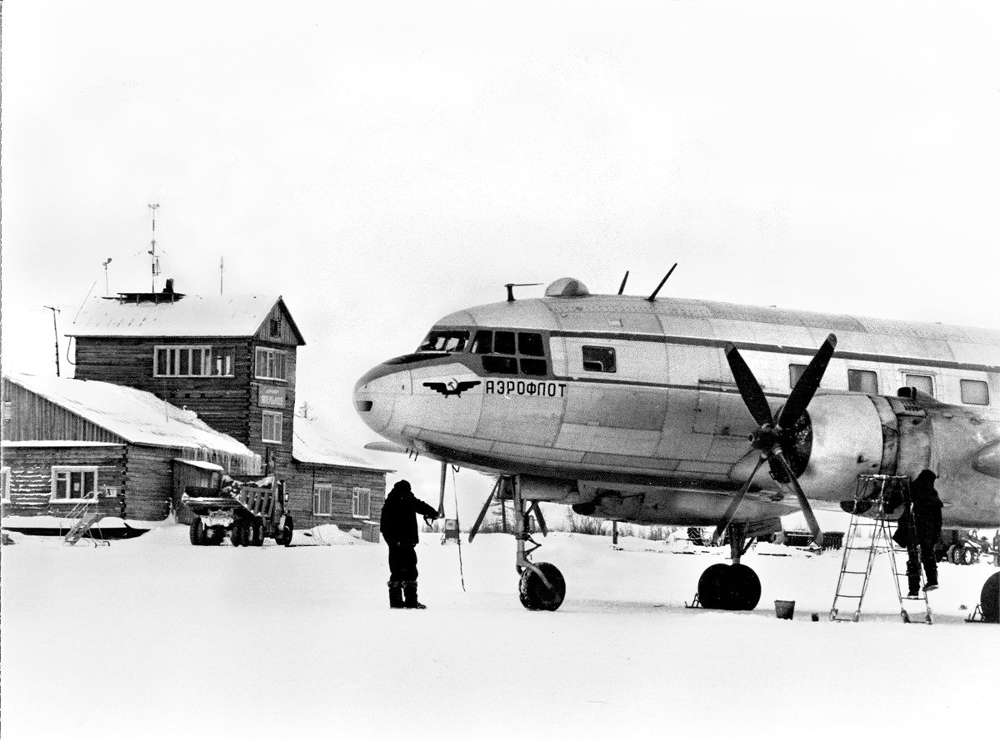
Второй аэропорт Нового Уренгоя начали строить в 1977 г. там, где он сейчас находится. Летом 1980 г. были введены в строй искусственная взлетно-посадочная полоса, средства системы посадки 1-го направления, служебно-пассажирское здание на 50 пасс/час, часть перрона и места стоянок для вертолетов (вертодром №1). На базе этого аэропорта была создана Новоуренгойская объединенная авиаэскадрилья. Тогда же у предприятия появились свои первые вертолеты и работа закипела.
Чтобы летать на Севере, нужны особые таланты. Здесь очень экстремальные климатические условия: короткое лето, длительная зима с аномально низкими температурами и полярной ночью, бескрайние белые просторы, резкие изменения метеоусловий с наводнениями, обледенениями, горящей тайгой...
Здесь зачастую нет не то что аэродромов, а даже площадок, более-менее пригодных для взлёта и посадки, а летать приходилось и приходится по правилам визуальных полётов – без приборов, в зоне прямой видимости.
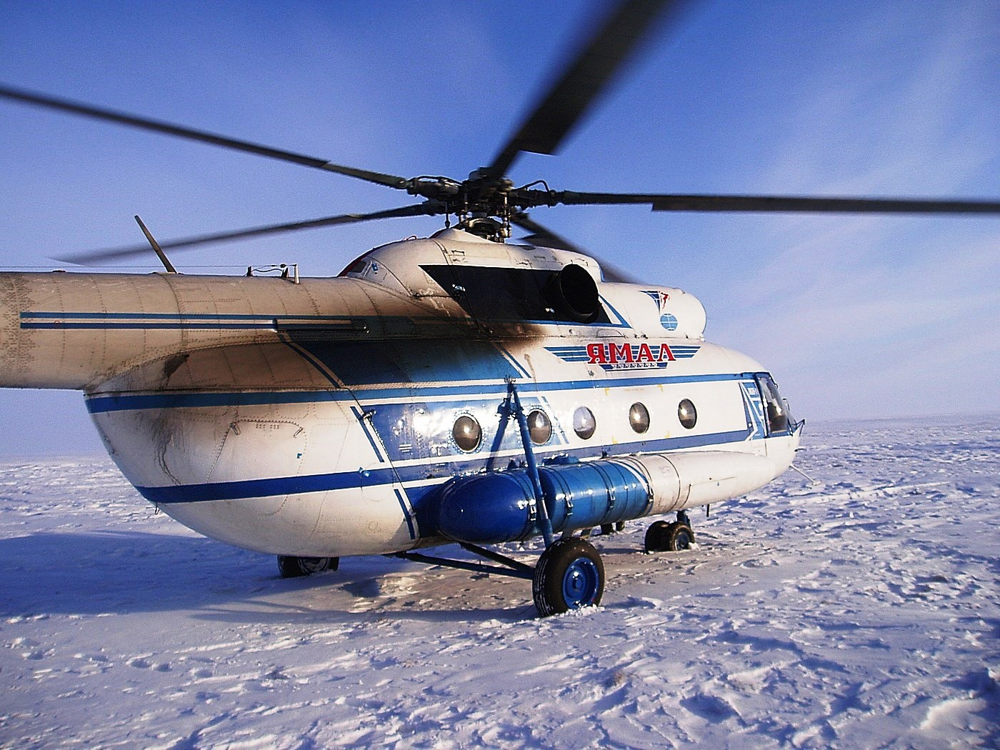
Сюда нужно добавить кислородное голодание организма, сложные бытовые условия. Поэтому полярные летчики - это особая категория людей. Вместе с тем и не каждый вертолет может долго трудиться в суровых климатических условиях Крайнего Севера. Ми-8 мог и может, потому что он надежен и способен к автономной безангарной эксплуатации.
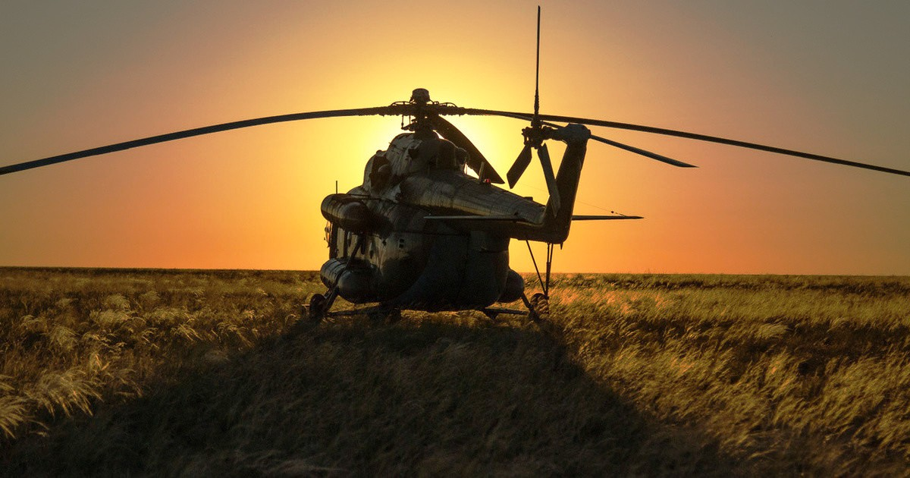
Вернемся к нашему новоуренгойскому красавцу, расположенному на крыше ТЦ «Вертолет». Осталось два вопроса. К какой основной модели Ми-8 относится наш вертолет? И куда же он летит? Ответ на первый вопрос прост. Посмотрите на вертолет. Рулевой, то есть хвостовой винт, на Ми-8Т установлен с правой стороны по ходу движения, а на Ми-8МТ - слева. На нашем справа. Значит, построен он был до 1980 года. А летит он по направлению к площадке, на которую в 1973 году приземлился вертолет с правительственной комиссией С. А. Оруджева, туда же через 3 месяца пришел санно-тракторный десант основателей поселка Ягельное.
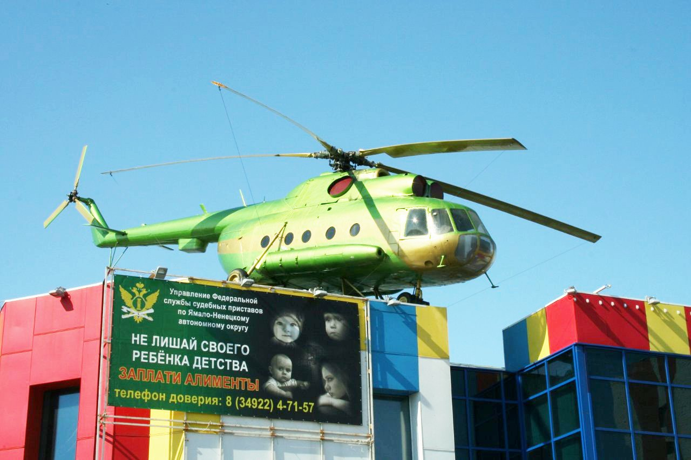